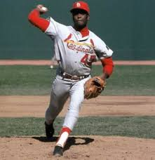
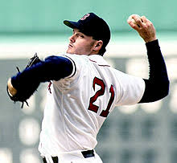
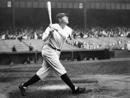
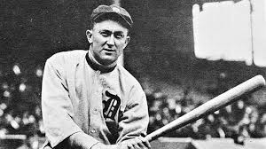
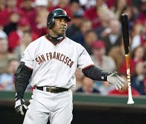

| Bob Gibson was one of the fiercest competitors of any era in baseball. He dominated the National League in the 1960s and 1970s. The right-hander Hall of Fame, Bob Gibson, won seven of his nine World Series starts, eight of them complete games. He was the first pitcher in almost 50 years to finish his career with more than 3,000 strikeouts! |  |
| William Roger Clemens, is an American former baseball pitcher who played 24 seasons in Major League Baseball for four teams. Due to his fierce competitive nature and hard-throwing pitching style,Roger Clemens, was given a nickname “Rocket”, which he used to intimidate batters. Clemens was one of the dominant pitcher in major league history, tallying 354 wins, a 3.12 earned run average, and 4,672 strikeouts |  |
| George Herman Ruth started out his name as a left-handed pitcher for the Boston Red Sox. But what made him famous was his signature move, the home run. After becoming a New York Yankee, in 1919, he set the home run record by a staggering 54 home runs. But he wasn’t done, in 1921, he blasted a new record of 59 home runs, drove in 171 RBI, scored 177 runs, batted .376 and had an unheard of .846 slugging percentage. |  |
| Tyrus Raymond Cobb, nicknamed The Georgia Peach was an American MLB outfielder. Cobb is widely credited with setting 90 MLB records during his career. With a combined total of 4,065 runs scored and runs batted in, is still the highest ever produced by any major league player. Cobb still holds several records as of the end of the 2018 season, including the highest career batting average at .367 and most career batting title with 11 |  |
| Barry Bonds who played for 22 seasons with the Pittsburgh Pirates and the San Francisco Giants received seven NL MVP awards, eight Gold Glove awards, 12 Silver Slugger awards and 14 All-star selections. In his career, Bonds was walked a total of 2,558 times, 688 in which it was intentionally. In 1998, Buck Showalter intentionally walked the Bond with the bases loaded. |  |